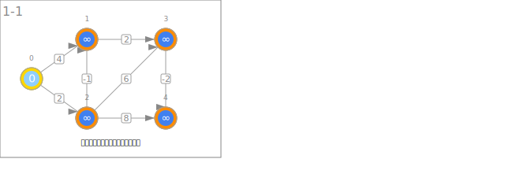
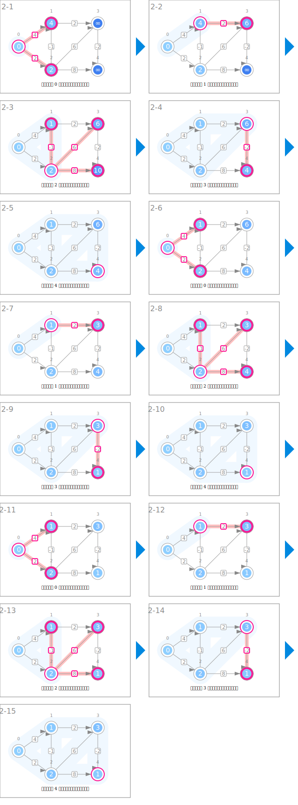
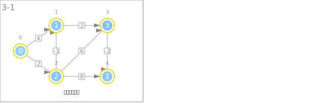

符号
| 数据 | ||
|---|---|---|
 |
从起点到各节点的最短距离 | dist |
 |
节点之间的距离 | weight |
| 起点的初始化 | ||
|---|---|---|
 |
将起点的暂定距离初始化为 0 | dist[s] ← 0 |
 |
将其他节点的暂定距离初始化为大值 | dist[v] ← INF |
| 距离的更新 | ||
 |
更新暂定距离 | if dist[e.v] > dist[u] + e.weight: dist[e.v] ← dist[u] + e.weight |
| 最短距离的输出 | ||
 |
输出从起点开始的最短距离 | |
动画
起点的初始化

距离的更新

最短距离的输出
